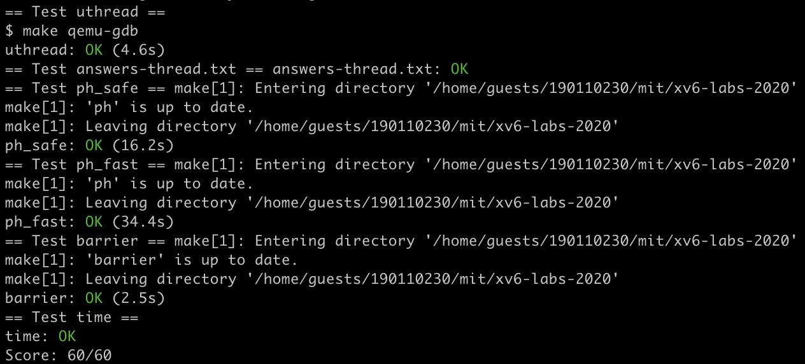

[xv6-mit-6.S081-2020]Lab7: thread
Lab: Multithreading
https://pdos.csail.mit.edu/6.S081/2020/labs/thread.html
代码：https://github.com/xyfJASON/xv6-mit-6.S081-2020/tree/thread
Uthread: switching between threads
任务：在用户层面实现线程切换机制。
我们需要补充完整 user/uthread.c 中的 thread_create() 和 thread_schedule()，以及 user/uthread_switch.S 中的 thread_switch。两个目标：
- 当 thread_scheduler() 第一次跑某一线程时，该线程在自己的栈上执行传入的函数；
- thread_switch 保存切换走的线程的寄存器，恢复要切换的线程的寄存器，并返回到线程上一次切走的位置。
如果在做实验前看过 xv6 book 的第 7 章和相关代码，就会发现我们只需要模仿内核中进程切换的方式写这个任务。内核首先定义了一个 context 结构体，包含一系列 callee-save registers：
1 | |
寄存器被分为两种类型——caller-save 和 callee-save，顾名思义，前者要求调用者保存和恢复相关寄存器，而后者要求被调用者保存和恢复相关寄存器，也就是说，从调用者的角度看，caller-save 寄存器在调用前后可能发生变化，而 callee-save 寄存器不会变化 。因此，切换时我们只需要恢复 callee-save 寄存器。
除了 callee-save 寄存器需要恢复以外，栈指针 sp 和返回地址 ra 也需要恢复，它们构成了上述 context 结构体的内容。
完成上下文切换的是一段汇编代码：
1 | |
C 程序只需要调用 swtch(&old_context, &new_context) 就可以实现切换了——原理是什么呢？在 C 代码被汇编成汇编代码时，函数调用的参数会被依次放入 a0、a1、……寄存器，因此，调用 swtch 时，a0 寄存器就是 &old_context，a1 寄存器就是 &new_context。由于一个 uint64 占 8 字节，所以 0(a0)、8(a0)、……就分别对应 old_context 结构体里的 ra、sp、……。
仿照上述代码，这个任务就很简单了：
- 我们也定义一个 context 结构体，包含 ra、sp 和 callee-save registers，放进 struct thread 中；
- uthread_switch.S 直接复制 kernel/swtch.S；
- 在 thread_schedule() 中调用 uthread_switch 并把旧的线程上下文
&t->context和新的线程上下文&next_thread->context作为参数传入； - 最后，在 thread_create() 中把传入的函数指针给到线程上下文的
ra——这样当这个线程被调度执行时就可以执行指定函数了；同时把栈指针给到线程上下文的sp——注意，栈空间是按地址从大到小增长的，所以我们给的应该是 stack 数组的末尾指针。
Using threads
任务：在一台多核 Linux 或 MacOS 上使用 UNIX pthread 线程库写多线程的并行程序。
MIT 提供了一个代码 notxv6/ph.c，它开给定数量个线程，每个线程向 hash 表里面加许多 key（put 操作），然后从 hash 表里取出 key（get 操作），同时记录 put、get 的用时，以及缺失的 key——本来应该在 hash 表里，但是 get 不到。发生缺失的原因是 ph.c 没有在多线程时加锁，我们的任务就是把锁给加上。
相关接口：
1 | |
对于在学习操作系统理论课的时候就喜欢瞎折腾的我，这个任务就……蛮简单的（逃。给每个 hash 桶加一个锁，put 和 get 的时候先加锁，再操作，最后解锁就搞定了。
Barrier
任务：实现一个 barrier——执行到这里的线程必须等待，直到所有线程都执行到了这个地方。
和上一个任务一样，notxv6/barrier.c 已经写了一个不对的 barrier，它开给定数量个线程，每个线程做一个循环，循环的某处调用了 barrier()。我们期望所有线程都调用了 barrier() 之后才能继续执行。
相关接口：
1 | |
看过 xv6 book 第 7 章就能很好理解什么叫做在一个 condition 上 sleep、什么叫做 broadcast、以及为什么 wait 的时候要传入一个锁了，此不赘述。
1 | |
make grade 截图：
